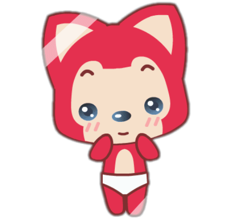
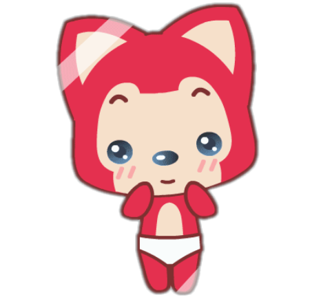
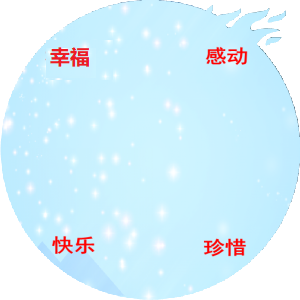
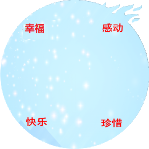

Copyright©2020.8.25

 



以前的小张是一个内向而且容易害羞的人哟（不可以在心里说，咦~，乖乖，mua~），以前我在学校基本上都不和女同学说话， 一说话就支支吾吾，眼神躲闪，哎，现在我的想起来甚是不能理解，当时有啥可害羞的！

记着以前上小学的时候，因为是在外地上的，所以人生地不熟，也没有个认识的小伙伴，然后就会时不时的被别人欺负，记着有一次 他们问我要钱，一共就那么几毛钱还被抢走了，当时一个人还委屈的没有哭一直到晚上没人的时候才在被窝里偷偷掉几滴眼泪，也许是经历 过来就会成长吧，熬过了那个黑暗阶段之后就开始变得坚强，毕竟那么小的时候就已经遇到过了，还有什么大不了的，后来有两个人 ，兄弟俩觉得我好欺负就整天挤眉弄眼的找事，然后我就跟他们打起来了，自此以后不管遇见什么，心里害不害怕，都要坚强！
以前我很内向，不管是什么事情都不和别人说，包括我爸妈，就像之前小学被欺负和别人打架的事他们都不知道，所以我那个时候心里 积压的事情很多，但是又不想和任何人说，所以我基本上以前都是耷拉着个脸，用我妈的话来说就跟别人欠了我多少钱一样，值得庆幸的是 我后来 慢慢变好了一些，要不然我早就被憋死了，哈哈！

还记着小时候赶集，当时集上最好的地方就是卖玩具的地方， 但都只是看看，玩具手枪，陀螺，四驱车，当时每天心心念念的玩具，这些~我一个都没有，哈哈，不对，好像有过一个陀螺，玩具手枪和 四驱车我都没有拥有过，但是当时也没有吵着去要钱去买，难不成我早熟？嘿嘿~

相比之下，喃好羡慕你呀，你小时候可是一方霸主呀，嘻嘻，大姐大， 你说要是小时候你遇见我了，你是会欺负我呢，还是会保护我呢，这是个问题，哈哈~


还记得我们当时是在表白墙认识的，一开始的我们没有很熟，交流也不是很多，（后来你说当时加你的人都被删了， 但是我却幸运的存活了下来，一切就是那么的巧又是那么的美好，嘻嘻！）渐渐的我们熟络了起来，我们一起玩游戏， 一起聊天，一起吐槽，一起分享各自每天遇见开心的不开心的事情，就这样，渐渐的我开始期待来自你的消息！
还记得我们第一次见面是在稷下湖北边的那块石头那里，那一次我是先到了，但是我很紧张，我还从来没有和女孩子单独在一个空间里， 所以我看到那边没有人之后就假装往回去的路走，我清楚记得，那是你，我在小路上往回走的时候我们擦肩而过，我之前没有见过你， 但是当时我就有一种感觉，那个人就是你，但是我怕认错人了，我转过头假装往回走，在看到你往那边走了之后我开始确定那就是你， 我连忙小跑过去······就这样我们在现实中相遇了！（后来你跟我说第一次见我觉得我像一个猥琐大叔！嘤嘤嘤！人家好桑心！需要亲亲安慰！）

我们第二次见面是在二体西北角的那个门口外，那天晚上我们都在上晚自习，突然你发了一条消息，说你想吃肉肉，我回复你说大哥请你吃呀， 没想到你真的同意了，我当时开心到跳起，赶紧收拾了一下书包就奔去了二体那边，等我远远看见你的时候，突然又有点小紧张（咦~，别以为我们不知道你 脸皮有多厚哈小张，但是就是紧张吗，嘤嘤嘤~），那天你穿的是一个小裙子和一个短袖，背着你那个粉色的小书包，可爱又美丽，嘻嘻（吭吭~小张你跑题了哈！嘻嘻，说正题说正题） 然后我们去亿丰买了奶茶和寿司还有那个球球形状的吃的（我忘了叫什么了，嘤嘤嘤！） 回去的时候你竟然想把寿司让我拿回去，都说是请你去吃东西的了， 我怎么能抢你的吃的呢，嘻嘻！义正言辞的拒绝！
那个时候你还会时不时的玩王者，蹲点安排！嘿嘿！看见你在线就邀请，游戏中就等到你打完出来，哎呀呀，说好的巧合呢！暴露了暴露了！快跑呀！

那个时候每天有事没事就会去看两眼手机，就想看到你的QQ消息，那要是没有消息，又特别想发消息 该怎么办呢？那就去找个好玩的，假装是推荐咯，嘿嘿~，本来之前我每天最幸福的时间是回宿舍和他们玩游戏和睡觉的时间，但是自从认识了你之后，最开心的时间就是和你聊天，逗你笑的 时间！这难道就是情窦初开？嘻嘻~

但是不知道是因为害羞，还是因为觉得自己不好看没自信，我没有去追求你，只是这么单方面的期待着~ 等待一个合适的契机！


我们第一次确定关系是在暑假放假的时候，那是一个夜深人静的夜晚，突然你发了一条 消息，你说我让你生气了，你从来没想过我会对你的心情产生这么大的影响；让自己暗恋的小可爱这么生气，这可不行，那怎么办呢？唱歌！因为没有给别人唱过歌，也不知道唱的好 不好听，只能把自己觉得唱的还可以的唱给你听了，也不知道碍于我面子还是什么的，你竟然没有嫌弃我唱的难听，嘿嘿，第一次演唱圆满成功！在我动听的歌声下，你这个美丽的小可爱 终于笑了（动听的歌声？小张，你良心不会痛吗？你说啥，我听不见，哈哈）怎么庆祝一下小可爱不生气了呢？ 在一起！嘻嘻~，就这样我们的关系开始进了一步！

就这样一直到了快开学的时候我们才见到面，那次你都没有告诉我你要回学校，等到你到了才告诉我， 还说是一个惊喜，嘻嘻~，弄得我还怪紧张的呢~，然后那天下午我们去小义乌溜了一圈，我清楚的记得，在过马路的时候我们牵了手手，嘻嘻，开心，但是过了马路就给牵牵了，哭唧唧~
还有一次去济宁去找你玩的时候，那天淅淅沥沥的下着雨，等咱们下公交车的时候已经下大了， 地上都是小水坑，你仗着穿了拖鞋就piapia~踩小水坑溅我，哭唧唧~，等咱们按照地图的指示走到那个楼下的时候，我们发现，？，为啥都关着门，从哪上去啊，走错了？后来 我们沿着那个楼转了大半圈才找到上去的门，哈哈哈，上去之后发现小房间还是挺好的，不枉我们转了大半圈，嘻嘻~

下次我们去青州了还要去吃那个老槐树煎包，嘻嘻，还有青州那么多的柿子树， 一树一树的柿子都没有人摘，看着好眼馋哟，下次找个棍敲一个下来，拿上就跑路，不对，敲俩，一人一个，哈哈~
对对对，等明年葚子熟了我要去你们那摘葚子，到了你的地盘，你请客，偶吼吼~，上次没有摘到有点 可惜，下次咱们就知道了，有3路的车，还很多呢，嘻嘻~


经过这么长时间的相处，我发现我们的性格有点像，有时候都有点小犟，但是 如果都这么犟的话，难免会弄得我们都很伤心，问题还得不到解决，所以我以后不会再犟了，我会好好包容你，爱护你！让你做一个开开心心的小可爱！
在我们相处的过程中因为我自己做的不好让你生了好几次的气，真的很对不起，我已经非常深刻的 了解到了自己的问题，我会一一改正的，在我们以后的日子中我一定要加倍对你好，弥补我之前犯的过错！
我爱你，我在乎你，不管以后有什么困难摆在面前，跌倒多少次，我也要和你在一起，为了 我们的未来努力！
 



茫茫人海中，好不容易遇见了命中注定的你，我一定会好好珍惜你的！

未来不管遇到什么事情，我都会一如既往的支持你，和你一起面对一切风风雨雨！
以后我一定要好好努力挣钱，为了我们未来的小家，努力！
余生是你，未来可期，我爱你老婆！